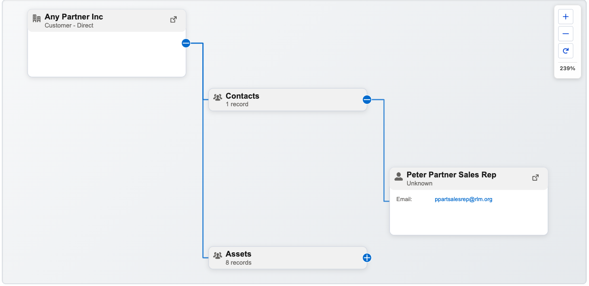

Object agnostic
Visualize any Salesforce object with a parent-child relationship.
Open source · Salesforce Lightning
See the shape of your Salesforce data.
A flexible Lightning Web Component that turns parent-child records into a clear, interactive hierarchy. Configure it for your objects with Custom Metadata, not code changes.
01 About
Explore parent-child relationships across Salesforce records in one configurable canvas. Choose the object, relationship field, title, subtitle and icon for each setup. Add related object information and set a record limit to fit the way your team works.
02 In practice

03 Capabilities
Visualize any Salesforce object with a parent-child relationship.
Define hierarchy behavior with Custom Metadata, without changing component code.
Choose title, subtitle, icon and additional fields for each record.
Optionally include related object information in the hierarchy.
Set a configurable maximum number of records to retrieve.
Place the component on Record, App and Home pages in Lightning App Builder.
04 Under the hood
05 Get started
Deploy the project metadata, then use the included Account hierarchy configuration or create one for your own object.
In Lightning App Builder, add Hierarchy Canvas, set its Configuration Name to your Custom Metadata record’s Developer Name, then save and activate the page.
# Deploy to your org
sf project deploy start --source-dir force-app/main/default
# Optional: target a named org
sf project deploy start --source-dir force-app/main/default --target-org myorg
# Run local Apex tests
sf apex run test --test-level RunLocalTests --target-org myorg